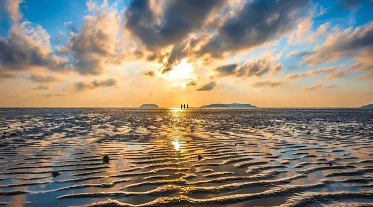

Introduction to Kota Kinabalu
- Country name : Malaysia
- City name : Kota Kinabalu
- Population : About 480,000
-
Major features
- Kota Kinabalu is the capital of Sabah, Malaysia.
- The sunset is so beautiful that it is called one of the world's three greatest sunsets.
- Like Bohol, there are various tours for tourists.
- Tanjung Aru Beach is a world-famous sunset spot, and you can enjoy the sunset at various restaurants and bars located along the beach.
Tourist Attractions in Kota Kinabalu

Tanjung Aru Beach
Blue Mosque
Sapi Island
Food in Kota Kinabalu
Nasi Goreng
Mi Goreng
Satay